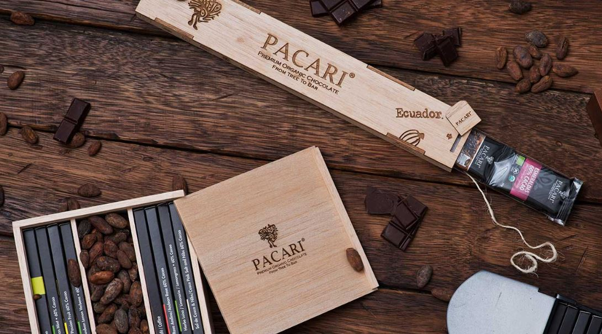

Descubre Pacari.
Pacari Chocolate es una empresa familiar creada en 2002 por Santiago Peralta y Carla Barbotó con el objetivo de cambiar la historia del chocolate en Ecuador. Lo que empezó como una empresa familiar muy pronto se convertiría en un negocio que revolucionó la industria, no sólo en el país, sino en toda la región de América Latina. Pacari significa “naturaleza” en Quechua, nombre elegido para evocar todo lo que representa su chocolate: los mejores productos de la tierra, 100% naturales. Esta firma garantiza así la salud de la tierra y de quienes consumen sus productos, pues están libres de soya, lácteos, gluten, químicos y transgénicos.
